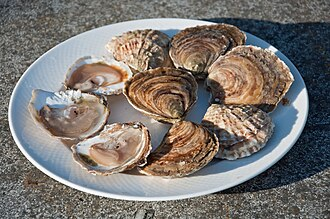

かき（牡蠣）の生産量 都道府県ランキング
1位から3位までと、とれた量
かき（牡蠣）が日本でいちばん多く育てられているのは広島県です。9万4,290 tで、全国（14万8,149 t）の64%を占めます。

| 順位 | 都道府県 | 収獲量 | 全国に占める割合 |
|---|---|---|---|
| 1位 | 広島県 | 9万4,290 t | 64% |
| 2位 | 宮城県 | 1万5,190 t | 10% |
| 3位 | 岡山県 | 1万4,671 t | 9.9% |
この数字について
- 分類：貝の仲間
- 全国の収獲量：14万8,149 t
- この数字が表すもの：収獲量（養殖で育てて取り上げた重さ）
- 調査：海面漁業生産統計調査（海面養殖業） 令和6年
- この品目は養殖の統計です。
- 27県分を調査（調査していない県は順位に入りません）
かき（牡蠣）の生産量について、よくある質問
- かき（牡蠣）の生産量が日本一の都道府県はどこですか？
- 広島県です。海面漁業生産統計調査（海面養殖業）（令和6年）で9万4,290 tでした。
- かき（牡蠣）の生産量ランキング2位・3位はどこですか？
- 2位は宮城県（1万5,190 t）、3位は岡山県（1万4,671 t）です。
- かき（牡蠣）の全国の生産量はどれくらいですか？
- 14万8,149 t（令和6年）です。